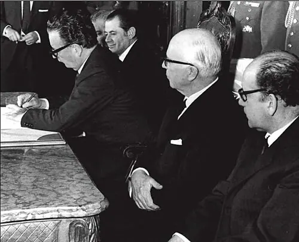

Nacionalización del cobre

Desde comienzos del siglo XX, la gran minería del cobre, con yacimientos como Chuquicamata, El Teniente y El Salvador, estaba en manos de las empresas estadounidenses Anaconda y Kennecott, y el cobre se había convertido en el principal producto de exportación del país. El gobierno de Eduardo Frei Montalva impulsó la "chilenización": el Estado se asoció con esas empresas, adquirió una participación mayoritaria y luego pactó una nacionalización gradual. Salvador Allende propuso la nacionalización total mediante una reforma constitucional, que el Congreso aprobó por unanimidad y que fue promulgada el 11 de julio de 1971, fecha que el gobierno llamó "Día de la Dignidad Nacional". La reforma permitió descontar de las indemnizaciones las "rentabilidades excesivas" obtenidas por las empresas, lo que en la práctica dejó a varias sin compensación y generó litigios y tensiones con Estados Unidos. Tras 1973, la dictadura mantuvo la propiedad estatal, acordó compensaciones con las empresas y en 1976 creó la Corporación Nacional del Cobre (Codelco). La nacionalización fue uno de los pocos acuerdos transversales de esos años polarizados, aunque sus efectos económicos inmediatos se siguen debatiendo.
Versión para niños
Chile tiene muchísimo cobre, un metal que se usa para fabricar cables y muchas otras cosas. Antes, las minas más grandes, como Chuquicamata, pertenecían a empresas de Estados Unidos. El 11 de julio de 1971, durante el gobierno de Salvador Allende, se aprobó una ley que hizo que esas minas pasaran a ser del Estado de Chile. Lo especial es que todos los parlamentarios del Congreso votaron a favor.
Para maestros
Nivel sugerido: 2° medio
Objetivo: Explicar el proceso de chilenización y nacionalización del cobre y su importancia para la economía chilena.
Preguntas para la clase:
- ¿Por qué se ha dicho que el cobre es "el sueldo de Chile"?
- ¿Por qué la nacionalización logró el apoyo de partidos que estaban en desacuerdo en casi todo lo demás?
- ¿Qué diferencias hay entre la chilenización y la nacionalización?
Actividad (20–30 min): En grupos, los estudiantes elaboran una línea de tiempo de la propiedad de la gran minería del cobre desde comienzos del siglo XX hasta la creación de Codelco y explican en dos frases cuál fue el cambio más importante.
Fuentes sugeridas: Biblioteca del Congreso Nacional (BCN); Memoria Chilena; Museo Histórico Nacional.
Objetivos de Aprendizaje (Currículum Nacional)
- 5° básico · HI05 OA 10 Reconocer y ubicar en mapas recursos naturales significativos de Chile, como cobre, hierro, recursos marítimos y forestales
- 2° medio · HI2M OA 13 Analizar el Chile de la década de 1960 … y de la Unidad Popular ("vía chilena al socialismo")
- 2° medio · HI2M OA 14 Analizar el ambiente de crisis a inicios de la década del 70 … los conflictos en torno a la reforma agraria, las estatizaciones y expropiaciones
Personajes
Revisión humana pendiente. Cómo se revisa · Reportar un error
Cómo citar: Historia de Chile. (2026). Nacionalización del cobre. En Historia de Chile: atlas y línea de tiempo. https://moises-salgado.github.io/historia-de-chile/momento/nacionalizacion-del-cobre.html